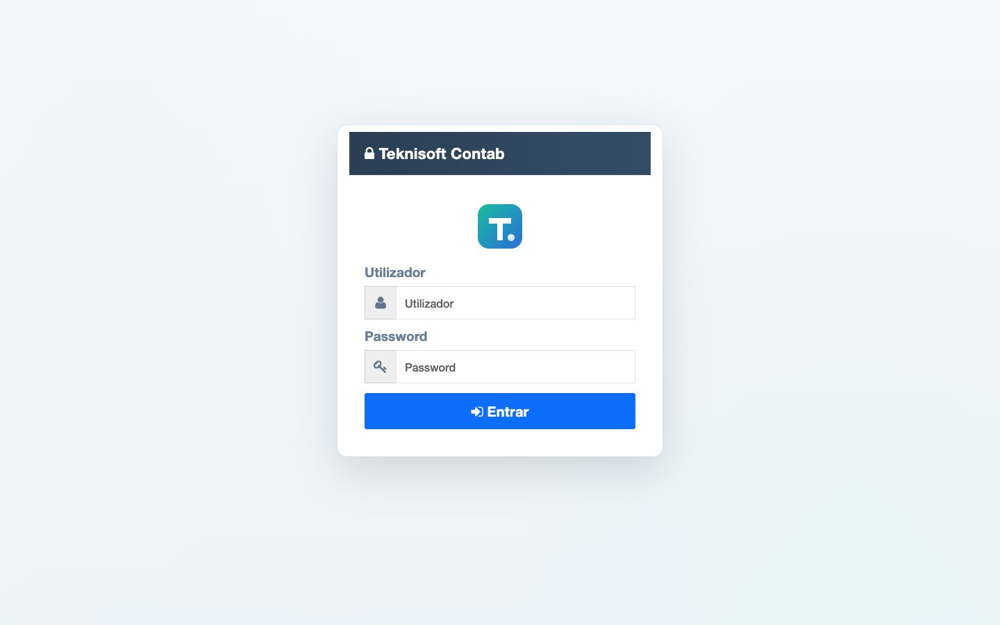

Área reservada do cliente
Cada cliente do gabinete pode ter acesso a uma área própria, com a imagem do gabinete, onde consulta os seus documentos contabilísticos e os envios de SAF-T.
Nesta página
Acesso
A área do cliente tem um endereço próprio por tenant, do tipo …/t/{gabinete}/cliente. O cliente entra com o utilizador e a palavra-passe criados pelo gabinete.
app.teknisoftcontab.pt/t/…/cliente/login

O que o cliente vê
| Secção | Conteúdo |
|---|---|
| Dashboard | Resumo da empresa e atalhos. |
| Documentos contabilísticos | Documentos tratados pelo gabinete (emitente, número, data, totais com e sem IVA, estado), com filtro e download. |
| Envio de SAF-T | Envios efetuados: período, ficheiro, data, resposta da AT e valores/faturas extraídos. |
Gestão pelo gabinete
- Abra a ficha do cliente em Entidades > Empresas, separador Extranet.
- Em Gestão de utilizadores, Adicionar utilizador (nome, e-mail, utilizador, palavra-passe).
- Ative ou desative contas a qualquer momento; os contadores mostram contas ativas e inativas.
- Use Impersonar para ver a área exatamente como o cliente a vê (abre noutro separador; fica registado em auditoria; termina com Terminar impersonação).
Mais-valia
O cliente deixa de pedir por telefone ou e-mail "o que já entregou" ou "se o SAF-T foi enviado": tem a resposta na sua área, a qualquer hora.
Teknisoft Contab · Edição 1.0 · novembro 2026 · Imagens com dados de demonstração anonimizados.